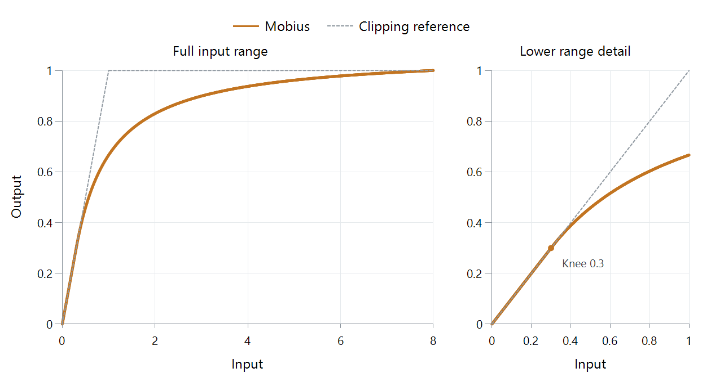

Tone Mapping Curve: Mobius
Mobius is a tone mapping curve that preserves lower signal values and smoothly compresses values above a chosen transition point.
Mobius leaves a lower interval unchanged, then joins it to a curved upper section. The knee is where the mapping begins reducing the extra output assigned to brighter inputs.

FFmpeg 8.1 scalar mapping, knee 0.3, source peak 8, output white 1, neutral gray in relative linear light. Dashed gray shows clipping.
What changes when the knee moves?
| Input | Knee 0.3 | Knee 0.6 |
|---|---|---|
| 0.1 | 0.1 | 0.1 |
| 0.3 | 0.3 | 0.3 |
| 0.6 | About 0.516 | 0.6 |
| 1 | About 0.667 | About 0.806 |
| 4 | About 0.937 | About 0.976 |
| 8 | 1 | 1 |
The plot shows the first column's mapping. Raising the knee keeps more inputs on the unchanged line, but leaves less output range above that point. For example, the knee-0.6 version places input 4 at about 0.976, leaving only 0.024 before the peak. The knee-0.3 version leaves about 0.063 there.
These numbers make the tradeoff visible: more preservation in the lower region means stronger compression of the remaining highlight interval. The knee uses the input working units; 0.3 is not 30% of a source peak of eight.
The join is constrained, not an arbitrary corner
The upper part uses a rational Möbius relationship, a scaled ratio of two linear functions. Its coefficients are chosen so it meets three conditions: output equals input at the knee, the slope there is one, and the source peak maps to output white.
Matching both value and slope makes the transition continuous without a sharp first-derivative corner. Above it, the curve gradually becomes shallower. The unchanged portion and the compressed portion therefore form one coherent response.
In an HDR-to-SDR path, surrounding color and output operations also act on the picture. An Emby comparison can use this plot to separate the curve's lower-interval behavior from those other stages: inspect an ordinary object below the knee and bright texture above it under the same conversion conditions.